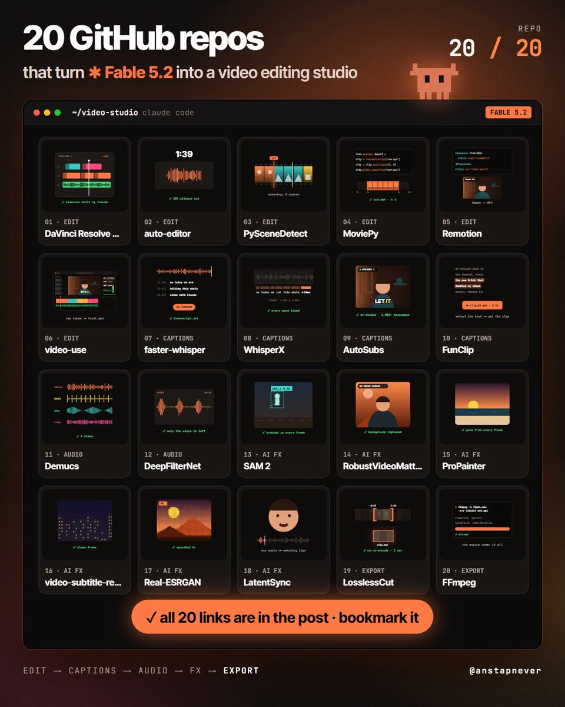
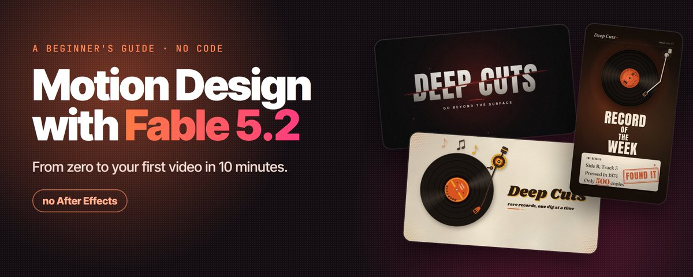
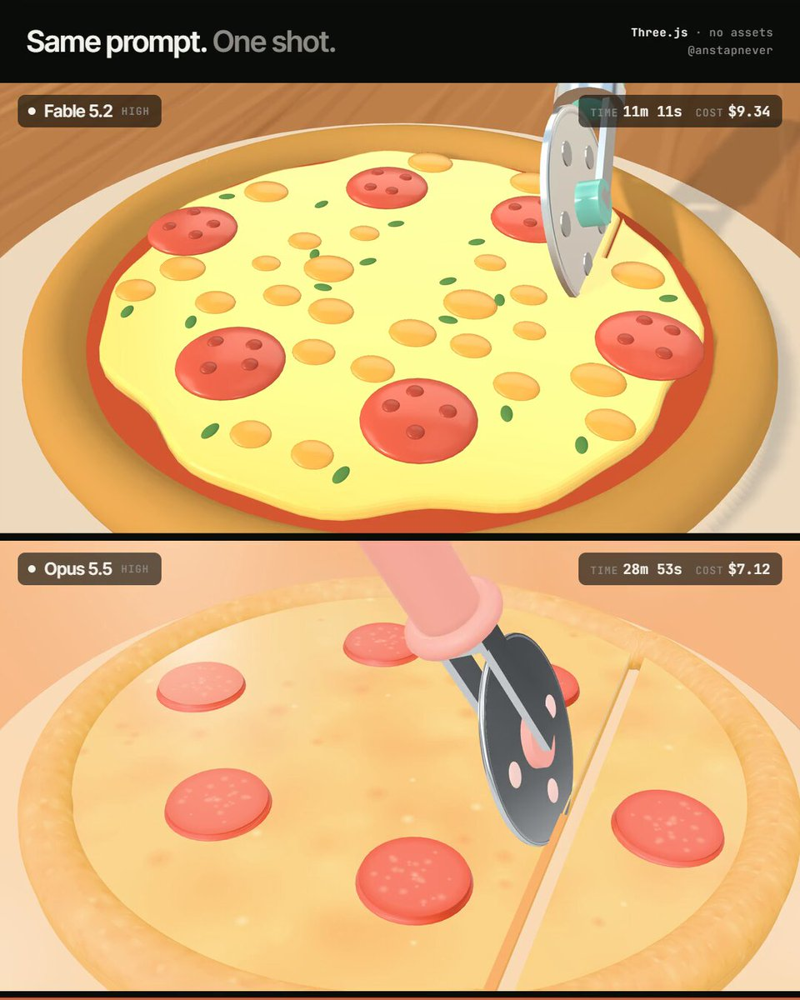

Motion design with Fable 5.2, archived in full.
Guides, prompt packs, repo stacks and every video about motion design with Claude Fable 5.2, archived word for word and kept in one place that grows with each new post.
Entries

I haven't opened After Effects in months, these 18 GitHub repos replaced it
Rebuild, time, paint, glow, sync, caption: 18 tools from reanimate to FFmpeg, every link expanded, plus the replies.
Motion toolsOpen sourceAfter Effects alternative
20 GitHub repos that turn Fable 5.2 into a video editing studio
Edit, captions, audio, AI FX and export: 20 open-source repos with every link expanded, plus the replies.
Video editingOpen source
Motion Design with Fable 5.2: From One Prompt to a Finished Film (Full Course)
A 20-chapter course: what people built and what it cost, setup, director's briefs, springs and easing, the clock, loops, rendering, motion QA, follow-ups, 3D and Blender, agent teams, budgets, formats, the toolbox, fixes and 4 prompts, with 11 embedded showcase posts.
Full courseSprings & easingMotion QABlenderAgent teams
Motion Design with Fable 5.2: from zero to your first video in 10 minutes
The guide that started this archive: setup in the Claude app or Claude Code, the 6-line director's template, 12 fix-it phrases, vertical video, render.py and 10 beginner mistakes.
Director's templaterender.pyClaude Code
Embedded posts and full prompt packs (One Half, Capybara Onsen)
Both PDF prompt packs in full: the 1146-word kids cartoon and 822-word capybara prompts, Fable vs Opus costs, 10 lessons and fill-in templates, plus the original PDFs.
Three.jsPrompts3D